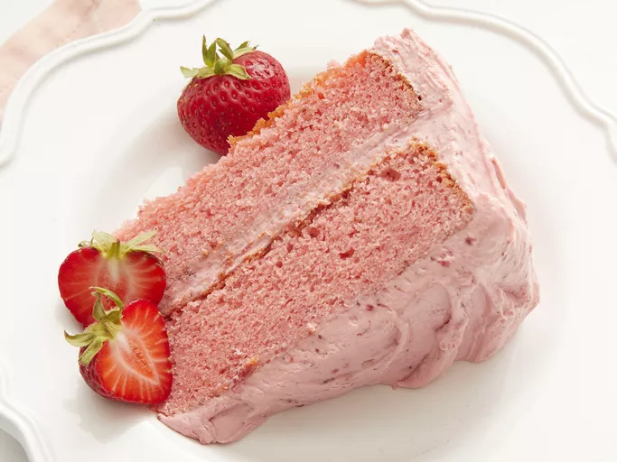

Strawberry Cake
This strawberry cake is easy to make from scratch with strawberry puree and strawberry gelatin. This recipe is worth its weight in gold to me as a caterer. I made this cake for a child's birthday party and it was a major hit! Frost with cream cheese frosting or chocolate ganache for a special treat.

Ingredients
- 2 cups white sugar
- 1 cup butter, softened
- 1 (3 ounce) package strawberry flavored Jell-O®
- 4 large eggs at room temperature
- 2 ¾ cups sifted cake flour
- 2 ½ teaspoons baking powder
- 1 cup whole milk, room temperature
- ½ cup strawberry puree
- 1 tablespoon vanilla extract
Steps
- Preheat the oven to 350 degrees F (175 degrees C). Grease and flour two 9-inch round cake pans.
- Beat sugar, butter, and dry strawberry gelatin together in a large bowl with an electric mixer until light and fluffy. Add eggs one at a time, beating well after each addition.
- Combine flour and baking powder in a large bowl; stir into butter mixture alternately with milk.
- Blend in strawberry puree and vanilla.
- Divide batter evenly between the prepared pans.
- Bake in the preheated oven until a toothpick inserted into the center comes out clean, about 25 to 30 minutes. Cool cakes on a wire rack for 10 minutes; run a table knife around the edges to loosen. Invert carefully onto a serving plate or cooling rack to cool completely.
- Enjoy!
Home